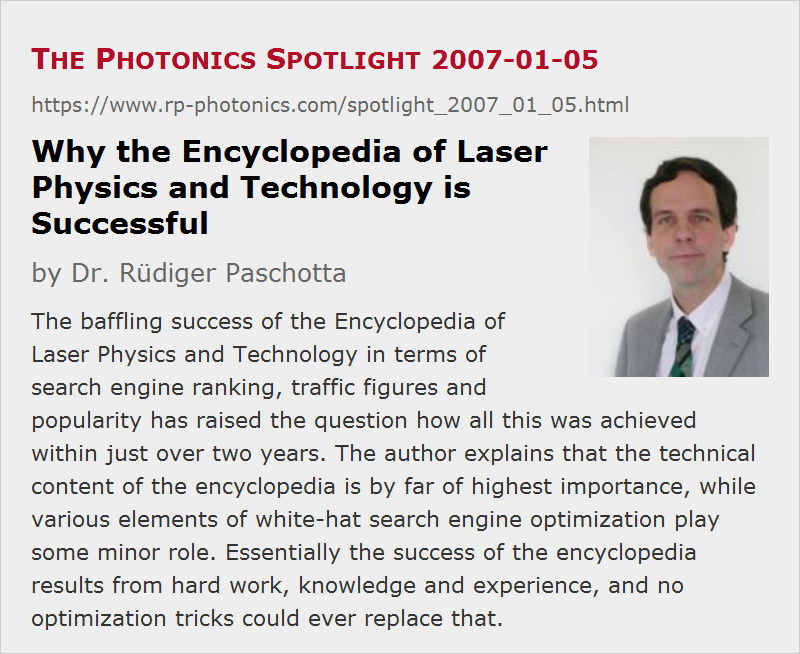

Why the Encyclopedia of Laser Physics and Technology is Successful
Posted on 2007-01-05 as a part of the Photonics Spotlight (available as e-mail newsletter!)
Permanent link: https://www.rp-photonics.com/spotlight_2007_01_05.html
Author: Dr. Rüdiger Paschotta, RP Photonics Consulting GmbH
Abstract: The baffling success of the Encyclopedia of Laser Physics and Technology in terms of search engine ranking, traffic figures and popularity has raised the question how all this was achieved within just over two years. The author explains that the technical content of the encyclopedia is by far of highest importance, while various elements of white-hat search engine optimization play some minor role. Essentially the success of the encyclopedia results from hard work, knowledge and experience, and no optimization tricks could ever replace that.

I am sometimes asked how I managed to make the Encyclopedia of Laser Physics and Technology so successful within a short time. In particular, people are puzzled about
- the very high ranking of this encyclopedia in the search results pages of all the major Internet search engines, and this for much of the large subject area of photonics and laser technology
- the enormous traffic (already well over 100,000 page hits per month, not counting the search engine robots),
- and the fact that little more than two years after its launch, this encyclopedia is already very well known.
For a small company, it is indeed rather unusual to acquire such a dominating position in the whole Internet for a significant range of subjects. So people ask, is there any trick behind this success? I am happy to reveal the used methods:
- Probably more than 90% of the success results from the simple principle “content is king”. I don't believe that any tricks (e.g. special marketing gags) could replace a large body of high quality technical content, already counting ] which are permanently improved further. Without all that quality content, visitors would soon turn away, nobody would be motivated to place web links on the encyclopedia, and particularly the better search engines would manage to determine that such a website cannot be terribly important. So content is the irreplaceable basis for all of the following.
- Search engines are for sure an important factor. They are finding a huge reservoir of information which is obviously relevant for a wide subject area as it contains a natural distribution of all the vital keywords as well as a dense link structure between the pages. In addition, they easily find that many web pages, among them quite authoritative ones, link to this encyclopedia. Moreover, they notice that the site is quite alive, i.e. it experiences extensions and changes all the time. Finally, so-called “white-hat search engine optimization” (using honest methods, never any kind of manipulation) essentially makes sure that certain common mistakes, which could significantly degrade the positive effect of all the content, are avoided. To give just one example, it can be a killer to use so-called meta keywords in the html code which don't literally appear in the displayed text – even in cases where this would factually make sense (e.g. to provide alternative wordings, which are equivalent in content). The risk of such features is that search engines may perceive them as a evidence for manipulation.
- The human factor is of course vital. Happy users will bookmark this website and will regularly come back to look up other things. Many are indeed routinely using the encyclopedia, because they often enough made good experience with it (as I know from the very encouraging user feedback). Nobody else than happy users will initiate many valuable links to the encyclopedia. (Paid links could never replace those, as the major search engines have learned to distinguish links of different “quality”, and I think that link directories are also not used that much by humans.) And guess what makes users happy – good content, of course, and not fancy flash animations or loads to poorly written stuff with lots of mistakes.
So there is no trick. It is all just the result of hard work, knowledge and experience. Anyone who can bring in these factors can run a very successful website, whether a large or small company (or no company at all) is behind. It is definitely not a matter of a large marketing budget – my one is tiny indeed, at least in financial terms.
As a final comment, laser companies and alike may often not have the ambition to dominate the Internet for some range of topics, since they figure that the effort would be too large. However, a little more care would often help. I often see sites which are graphically quite nice but contain many mistakes which result in unnecessarily poor performance in terms of search engine ranking. At the same time, they create doubts particularly with the more experienced visitors, e.g. through unclear or even non-sensible product specifications. Occasionally, people accept my offer to work through their website (or parts thereof) in order to suggest or implement some changes which effectively increase the success. (Note that a pure marketing or computer expert would not be able to identify all essential search terms and improve the product specifications.) But again, there are no tricks which can replace decent content.
This article is a posting of the Photonics Spotlight, authored by Dr. Rüdiger Paschotta. You may link to this page and cite it, because its location is permanent. See also the RP Photonics Encyclopedia.
Note that you can also receive the articles in the form of a newsletter or with an RSS feed.
Questions and Comments from Users
Here you can submit questions and comments. As far as they get accepted by the author, they will appear above this paragraph together with the author’s answer. The author will decide on acceptance based on certain criteria. Essentially, the issue must be of sufficiently broad interest.
Please do not enter personal data here; we would otherwise delete it soon. (See also our privacy declaration.) If you wish to receive personal feedback or consultancy from the author, please contact him e.g. via e-mail.
By submitting the information, you give your consent to the potential publication of your inputs on our website according to our rules. (If you later retract your consent, we will delete those inputs.) As your inputs are first reviewed by the author, they may be published with some delay.
|  |
If you like this page, please share the link with your friends and colleagues, e.g. via social media:
These sharing buttons are implemented in a privacy-friendly way!